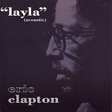

Who is Eric Clapton?
Eric Patrick Clapton was born on 30 March 1945 in his grandparents’ home at 1 The Green, Ripley, Surrey, England. He was the son of 16-year-old Patricia Molly Clapton (b. 7 January 1929, d. March 1999) and Edward Walter Fryer (b. 21 March 1920, d. 1985), a 24-year-old Canadian soldier stationed in England during World War II. Before Eric was born, Fryer returned to his wife in Canada.
Layla
Song written by Eric Clapton and Jim Gordon, originally released by their blues rock band Derek and the Dominos, as the thirteenth track from their only studio album Layla and Other Assorted Love Songs (November 1970). Its contrasting movements were supposedly composed separately by Clapton and Gordon.
And, personally, one of my favourite songs of all time. Not only because it´s amazing but because of the innovation and creation of one of the most memorable guitar riffs in rock music.
